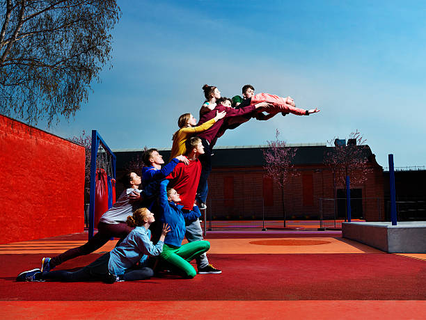
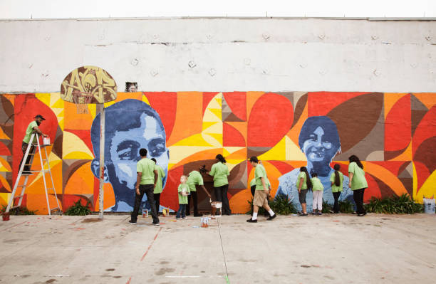
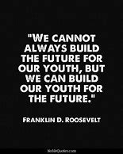

KYP A Global Platform For The Youth
The Comfort Zone
The youth are comfortable while in contact with other youth.
Let their talents be promoted by their parents.

Yah its true though, and make sure that you love your parents a much as you know.
Just the thing that the youth are interested in is the love for who they call their soulmates.
Yah this is true though many are not following their dreams. But it can be worked upon by delivering a message to them.
The youth are must know that they are supposed to shape their own future as a way of showing responsibility. As said by Mr. Kigenyi Abdul Rahman that "the you can end this world with just the internet!"
Back To Top